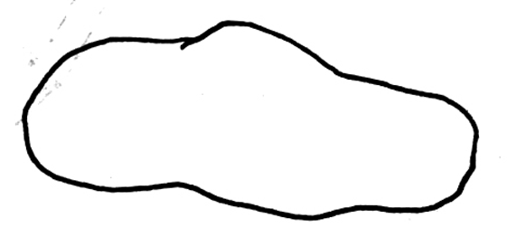

말풍선
✕
- 팻말에는 404의 역사가 적혀있다. -
"네! 제가 404를 묘사해 볼게요.
'불안정한, 텅 빈, 황량한, 애매모호한, 비어있는, 중단된, 당황스러운, 기상천외한, 기이한, 고립된, 길을 잃은 듯한, 어지럽혀진, 유쾌한, 유머러스한, 재치있는, 밝은.'
이 형용사들을
시각화
해보면 충분히 404를 재현할 수 있을 거예요.
더 궁금한 게 있나요?"
"여긴 어디죠?"
